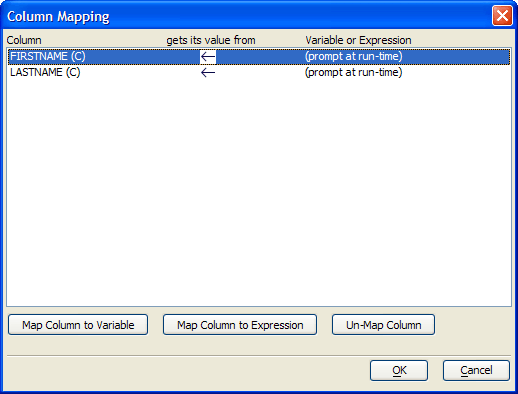

Column Mapping Dialog
The Column Mapping dialog allows you to specify whether the values used in a SQL INSERT statement will come from a:
user prompt at run time
a variable
an expression

Procedure
Select any entry in the Column list.
Optionally, click Map Column to Variable to display the Select Variable dialog.
Select an entry from the Category list.
Select a variable from the Variable list.
Click OK.
Optionally, click Map Column to Expression to display the Expression Builder dialog. Enter an expression that returns a value of the appropriate type and click OK. When running in the context of a form, you will be able to select a table field value.
Optionally, click Un-Map Column ...
Click OK to return the Script Genie.
Limitations
Desktop applications only.
See Also
Execute INSERT Query on a SQL Database